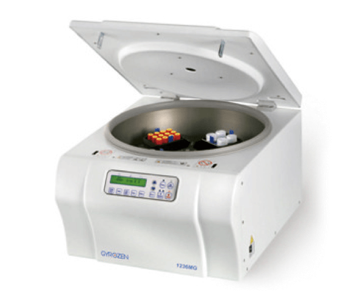
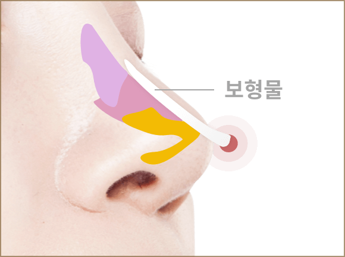
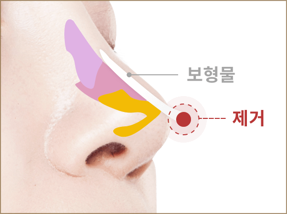
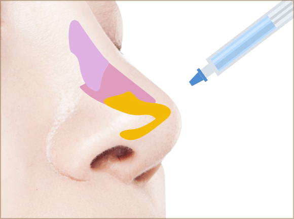

나노과학으로 완성된
진정한 피부 재생술
#안면
윤곽성형
얼굴의 모든 것을 고려한
다차원적 접근과
심층 상담을 통한
체계적인 준비
연세자연美
이마성형
눈밑의 주름이 처지고 눈밑 지방이 늘어져
나이들어 보이고 피곤한 인상을 지방제거
또는 처진 피부를 리프팅해주어 젋고
또생생한 눈매를 만들어 줍니다.
이마만 돋보이게 하는 것이 아닌 이마
볼륨을 채워주어 얼굴 전체에 입체감을
불어 넣는 효과가 있습니다.
예쁜 이마에서 나아가 자연스러운 美를
채워드립니다.
개개인의 이마 모양과 얼굴의 전체적인
느낌에 따라1인 체제 전문의 원장님이
세심한 맞춤 성형을 하므로 결과에 대한
만족도가 높습니다.
수술시간이 짧아 부기가 적고 회복이
빠르면 작은 절개로 흉터가 거의
없습니다.
연세자연美
이마성형 수술방법
자가지방이식 이용한 방법
원하는 돌출 정도에 맞추어 채취 및 이식하는
지방의 양을 조절할 수 있으며, 채취하는
지방의 양을 늘려 얼굴의 다른 부위 동시
이식도 가능합니다.
STEP 1
복부, 허벅지, 엉덩이 등에서 이식할
지방을 채취합니다.
STEP 2
채취된 지방의 불순물을 원심분리기로
제거해 순수 지방을 추출합니다.
STEP 3
이마 뼈와 근육사이 피하층에
균일하게 지방을 주입합니다.
실리콘 임플란트
이용한 방법
함몰된 이마 뼈에 맞춤형으로 실리콘
임플란트를 사전 제작할 수 있습니다.
흉터가 거의 없고 원하는 모양대로 정확하게
디자인하여 반영구적인 효과를 얻을 수
있습니다.
STEP 1
두피 절개 후 이마 뼈와
피부 연부조직 및 골막을 박리하여
공간을 만듭니다.
STEP 2
미리 제작된 실리콘 임플란트를
골막아래 위치시키고 압박하여
이마 뼈와 유착시킵니다.
STEP 3
흉터가 보이지 않도록
헤어라인 절개 부위를 꼼꼼하게
봉합하여 마무리 합니다.
반영구를 이용한 방법
아테콜, 벨라필
지속기간이 10년 이상 반영구적으로 길고,
성분 자체가 인조 뼈이기에 자가조직을
형성해 돌출을 유도하므로 촉감이
자연스럽습니다. 결과 예측이 가능하여
만족도에 따라 추가 시술이 가능합니다.
STEP 1
인공뼈 성분 PMMA소구체와
콜라겐을 용매제로 제조된 제품을
캐눌라를 통해 시술합니다.
STEP 2
콜라겐이 3주 내 체내 흡수됩니다.
STEP 3
PMMA 마이크로 입자가 체내에서
볼륨을 형성합니다.
연세자연美
코/무턱교정 수술방법
"아테콜 필러로 자연스럽게 "
코 수술 후 인공보형물로 인한 부작용이
발생한 경우 장기지속 필러인 아테콜 필러로
코의 라인과 높이를 유지하면서 안전하게
재수술이 가능합니다.
-

1
코 수술 후 부작용 발생
-

2
코 끝을 압박하는 보형물 제거
-

3
보형물 제거한 공간에 아테콜 필러 주입
-
4
자연스럽게 코 라인과 높이 유지
아테콜 필러의 콜라겐이 흡수된 후
PMMA주변으로 콜라겐을 형성하여
유지하기 때문에 코높이를 그대로
유지시켜주고, 본래 자기 코처럼
자연스러움을 오래 유지할 수 있습니다.
무턱교정 시술 후 보형물이 이탈하여
부작용이 발생한 경우 역시 장기지속 필러인
아테콜 필러로 안전한 재수술이 가능합니다.
-
1
무턱교정 시술 후 부작용 발생
-
2
국소수면마취를 후 보형물 제거
-
3
보형물 제거한 공간에 아테콜 필러 주입
-

4
자연스러운 턱 라인 유지
20 ~ 30분 정도 소요되며, 일상생활이
바로 가능합니다. 아테콜 내에 포함된
콜라겐작용으로 보형물을 제거하여도
라인은 그대로 유지됩니다.